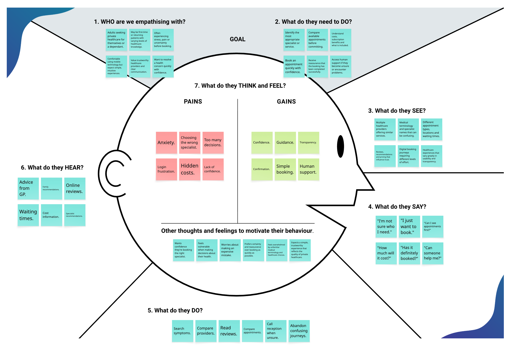
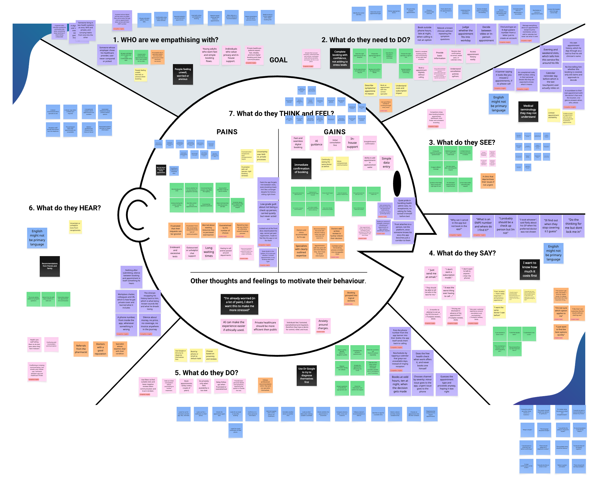
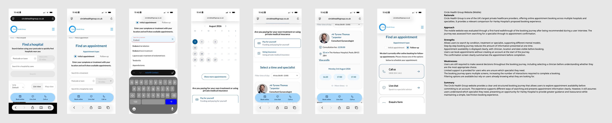
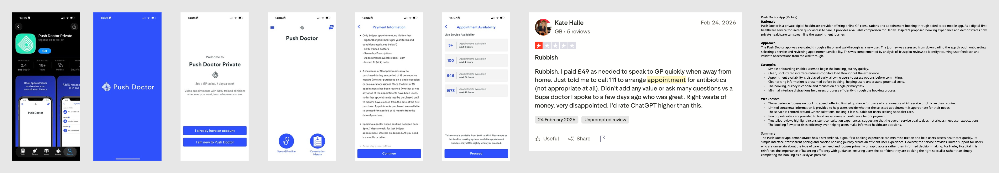

An end-to-end UX project for Harley Hospital's private appointment booking experience, developed in collaboration with Creative Navy as part of the King's College London Product Design programme.
Harley Hospital needed a unified mobile booking experience enabling patients to identify and book appointments across its private healthcare network. The initial brief emphasised completing a booking in under one minute - but our research quickly revealed that speed alone wasn't the real problem.
Patients begin the booking process already worried about their health. They need guidance to identify the right specialist, compare options, understand pricing, and feel confident their booking has been successfully placed.
As Project Lead, I directed the research phase - coordinating user interviews, competitor analysis, analogous market research and secondary research across the team. Findings were synthesised through affinity mapping and empathy mapping in Miro.
The research consistently surfaced the same six themes: uncertainty, trust, guidance, transparency, availability and cognitive effort. Speed was secondary to all of them.
"I'm already worried. I don't want this to make me more stressed."
- User interview participant
Patients don't always know which specialist they need. Navigating medical terminology at an already stressful moment creates significant cognitive effort and doubt.
Patients need to understand subscription entitlements, additional charges and what is included before they commit - not after. Unexpected costs were the most cited source of frustration.
Even digitally confident users wanted visible access to a human if they became unsure. The absence of this option caused abandonment rather than completion.
Following interviews and secondary research, the team synthesised all findings into a research-informed empathy map. Rather than representing a single participant, it captures the collective needs, behaviours, motivations and frustrations identified across all evidence sources.

Collated empathy map - synthesised from user interviews, competitor analysis and secondary research

Raw empathy map from the Miro synthesis workshop - all sticky notes before clustering
The initial brief asked us to enable patients to complete a booking in under one minute. Our research showed this was the wrong design question.
Adults seeking private healthcare need a clear and trustworthy way to confidently identify and book the right appointment - because navigating unfamiliar services, specialists and booking options creates uncertainty at an already stressful time.
The refined design direction was therefore to minimise unnecessary cognitive effort rather than simply minimise steps. The right balance is:
Speed with informed decision-making · Guidance with patient control · Simplicity with necessary healthcare information · Digital self-service with access to human support
Twelve competitors were analysed across direct (private healthcare booking), indirect (NHS and GP services) and analogous (travel, hospitality, financial services) markets. Two direct competitors are featured here in detail - alongside the broader patterns identified across the full analysis.

Strengths: Symptom-based search reduces upfront decisions. Appointment availability visible before account creation. Step-by-step journey presents information progressively.
Weaknesses: Multiple major decisions required before pricing is revealed. Limited guidance for users uncertain which specialist they need. Filtering requires prior knowledge of what you're looking for.

Strengths: Simple onboarding reduces cognitive load. Clean pricing presented clearly before commitment. Focused journey minimises distraction.
Weaknesses: Focused only on speed - limited guidance for uncertain users. No clear pathway for users who need to find the right service or clinician. Trustpilot reviews surface frustration when the speed-first approach fails.
Reviewed the Creative Navy brief and attended a Live Q&A with the client team. Identified key assumptions in the speed-first framing and proposed a research-led approach to validate or challenge them.
Led a structured programme of user interviews with adults who had experience booking private healthcare. Developed the research objectives, interview guide and participant criteria as Project Lead. Interviews focused on booking journeys, decision points, moments of uncertainty and abandonment triggers.
Analysed Circle Health Group and Push Doctor through first-hand walkthroughs and user review data. Also conducted analogous market research across other booking platforms - travel, restaurant, financial services - to identify transferable patterns.
Ran a collaborative synthesis workshop in Miro. Individual observations, quotes and behavioural insights from all research sources were grouped through affinity mapping before being organised into the empathy map to identify recurring patterns.
Reframed the problem statement based on research findings. Produced a prioritised list of user needs and requirements - from critical (booking with confidence, transparent pricing) to important (plain language, human support access) - and mapped them against Harley Hospital's organisational objectives.
No one initially wanted to take on the project lead role. I recognised that without someone coordinating the work, the team risked falling behind - so I stepped in, with Nick joining me as co-lead. That decision gave the team direction at a point when it needed it most.
What I hadn't anticipated was how much of the role would be invisible. I wasn't just allocating tasks - I was breaking down an open-ended brief into manageable pieces, organising the Miro board, planning meetings, coordinating with the client, and pulling together work from seven different people to make it feel like one coherent report rather than seven separate assignments.
The three biggest challenges I faced were managing communication across different schedules, jobs, family commitments and time zones; adapting to very different working styles within the team; and learning to lead while simultaneously delivering - without the luxury of observing someone else do it first.
The honest reflection is that I took on too much. I didn't just lead - I also became the UX strategist, quality assurer, editor, proofreader, client liaison and meeting organiser. That undoubtedly raised the quality of the submission, but it put significant pressure on me personally. In a longer project, I would distribute those responsibilities more deliberately from the start.
What I'm most proud of is how I handled the team dynamics. I consistently thanked people for their contributions, acknowledged the pressure everyone was under, and looked for ways to support rather than criticise when someone was struggling. I learned that leadership in a team with no formal authority is less about direction and more about making people feel capable and valued.
The distinction I took away from this week: project management is about keeping tasks on schedule. Leadership is about giving people direction, maintaining standards, making decisions when information is incomplete, and helping a group produce something better than the sum of its individual contributions.
User flows, mid-fidelity wireframes, prototype and stakeholder presentation are in progress. This section will update as the project progresses.